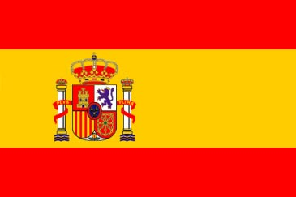

Perfil personal
Capacitat de realitzar activitats amb gran precisió i gran calitat. Bona condició física per a les tasques que ho requereixin. Facilitat a l'hora d'aprendre nous programes i noves tasques.

Capacitat de realitzar activitats amb gran precisió i gran calitat. Bona condició física per a les tasques que ho requereixin. Facilitat a l'hora d'aprendre nous programes i noves tasques.
Escola pia Santa Anna (Mataró) - Actualment en curs
Escola Pia Santa Anna (mataró) 2016-2018
INS Argentona 2011-2015
| Idioma | Parlat | Escrit | Entès | Matern |
Català  |
Molt alt | Molt alt | Molt alt | Sí |
| Castellà  | Molt alt | Molt alt | Molt alt | Sí |
| Anglès | Mig | Mig | Alt | No |
Manteniment d'equips informàtics i gestió de xarxes